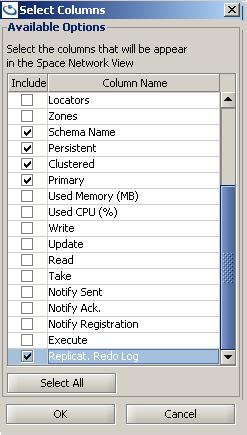

On replicated clusters, each member (which is a source that sends replication events to its targets) has a replication redo log. This is a list of pending replication packets that need to be dispatched to the different targets.
A replication packet is either a single non-transactional "destructive" (write/take/update) operation, or a group of these operations that are done under the same transaction. The redo log contains a single list that is kept for all the targets, and for each target a different state is maintained, which represents its position in the redo log. When the cluster is in a normal state, this redo log should remain at some low constant size. However, in certain common scenarios, such as a momentary network disconnection or a burst of high load, the redo log keeps all the pending events that need to be replicated until the source member manages to re-establish connection with the target, or until the replication target manages to catch up with the temporary load. As a result, the redo log size increases and can become quite large, depending on the different cluster usage, which affects the rate of creating replicated events.
Two options are available for the format of the redo log: byte-buffer and sqlite.
byte-buffer is the default format and consists of data in a binary format.
sqlite format writes the redo log data into a SQLite database located in the work directory. This format allows the user to browse through the redo log data using a SQLite jdbc viewer.
The configuration parameters described in this topic have a significant effect on the behavior of the replication mechanism and the overall and performance of the Space cluster. You should carefully evaluate every change you make to their default values, and consult the GigaSpaces support team if needed.
You can configure the following parameters to adjust the redo log behavior. You can configure the redo log behavior between Spaces and their mirror, and between replicated Spaces.
| Space Cluster Property | Description | Default Value |
|---|---|---|
| Global | ||
| cluster-config.groups.group.repl-policy.redo-log-memory-capacity | Specifies the maximum number of replication packets the redo log keeps in memory for all target types. | 150000 |
| Backup Partition | ||
| cluster-config.groups.group.repl-policy.redo-log-capacity | Specifies the total capacity of replication packets the redo log can hold for a standard replication target. | 150000 |
| cluster-config.groups.group.repl-policy.redo-log-recovery-capacity | Specifies the total capacity of replication packets the redo log can hold for a standard replication target while it is undergoing a recovery process. | 5000000 |
| cluster-config.groups.group.repl-policy.on-redo-log-capacity-exceeded | See the Handling an Increasing Redo Log section for details. | drop-oldest |
| cluster-config.groups.group.repl-policy.on-missing-packets | Options: ignore, recover. See the Handling Dropped Replication Packets section for details. |
recover |
| cluster-config.groups.group.repl-policy.redo-log-compaction | Options: mirror, none. See the Redo Log Compaction section for details. |
mirror |
| Mirror | ||
| cluster-config.mirror-service.redo-log-capacity | Specifies the total capacity of replication packets the redo log can hold for a mirror service replication target. | 1000000 |
| cluster-config.mirror-service.on-redo-log-capacity-exceeded | See the Handling an Increasing Redo Log section for details. | block-operations |
The following are low-level configuration parameters that relate to the swap redo log mechanism:
| Space Cluster Property | Description | Default Value |
|---|---|---|
| cluster-config.groups.group.repl-policy.swap-redo-log.flush-buffer-packet-count | Specifies the number of the packets/buffer size that the swap redo log uses when flushing packets to the disk. | 500 |
| cluster-config.groups.group.repl-policy.swap-redo-log.segment-size | Specifies the size (in bytes) of each swap redo log segment file. | 10485760 (10MB) |
| cluster-config.groups.group.repl-policy.swap-redo-log.fetch-buffer-packet-count | Specifies the number of packets/buffer size that the swap redo log is uses when retrieving packets from disk to memory. | 500 |
| cluster-config.groups.group.repl-policy.swap-redo-log.max-scan-length | Specifies the maximum allowed scan length (in bytes) in the swap redo log file in order to locate a packet. | 51200 (50KB) |
| cluster-config.groups.group.repl-policy.swap-redo-log.max-open-cursors | Specifies the maximum number of open file descriptors that the swap redo log will use. | 10 |
Here is an example of how to use the above parameters:
<os-core:embedded-space id="space" space-name="mySpace" mirror="true">
<os-core:properties>
<props>
<prop key="cluster-config.groups.group.repl-policy.redo-log-capacity">100000</prop>
<prop key="cluster-config.groups.group.repl-policy.redo-log-memory-capacity">100</prop>
</props>
</os-core:properties>
</os-core:embedded-space>
For all of these parameters, -1 specifies unlimited behavior. When the memory capacity is smaller than the entire capacity, if the memory capacity is reached the redo log stores the remaining packets on the disk, which prevents the JVM from running out of memory when the redo log size increases for the reasons mentioned above.
The redo log capacity for a mirror service must be the same or higher than the redo log capacity for a non-mirror target.
These defaults are supposed to address the following scenario: a cluster tolerates a 4-5 minute backlog accumulated in the cluster members without being replicated to the mirror, assuming a load of 3,000-5,000 transactions per second on each partition. When the redo log size reaches this size, operations are blocked until the mirror reconnects and/or keeps up with the pace. For a backup Space, the redo log is kept for a short disconnection of 20-30 seconds. Any disconnection longer than that is considered as if the backup is down, and it must do a full recovery. When the connection is re-established, its redo log is dropped without blocking operations.
Transactions are replicated in a single packet (to ensure atomicity), and the packet weight is the sum of the transaction operations it contains. Replication configuration is affected by the weight (size) of the redo log, which is a record of the packets that have accumulated prior to replicating to the target.
Two policies are available:
Accumulated
A single write/take/update operation is translated into a packet with a weight of 1.
Multiple operations are translated into multiple single operations with a packet weight of 1.
A transaction is translated into a packet with the accumulated weight of all the single operations within the transaction.
Fixed
All packets have a weight of 1.
You can use the cluster-config.groups.group.repl-policy.backlog-weight-policy property to configure the weight policy:
| Space Cluster Property | Description | Default |
|---|---|---|
| cluster-config.groups.group.repl-policy.backlog-weight-policy | Weight policy. Either fixed or accumulated |
accumulated |
All configuration properties that affect the size or capacity of the redo log refer to the redo log weight when running with the weight policy set to accumulated. Users upgrading from previous versions, who modified the default replication settings, should make sure they understand this change and test it before they upgrade the production environment. If it affects them, we recommend recalibrating the replication settings to suit the new behavior.
Here is an example of a transaction with a weight of 10, where the weight policy is set to accumulated:
TransactionStatus status = ptm.getTransaction(definition);
for (int i = 0; i < 10; ++i) {
Person person = new Person();
person.setId(i);
gigaSpace.write(person)
}
ptm.commit(status);
Redo log compaction means replacing the full packet with a lightweight discarded packet. The redo log weight is affected by the compaction, so the original packet weight is decreased and the (number-of-discarded-packet * 0.01) is added.
When the redo-log-compaction parameter is set to mirror, compaction is performed on every packet that has been received by all replication targets except for the mirror, and only for packets of type @SpaceClass(persist=false) (which means the packet should not be persisted to the database).
To disable compaction, set the redo-log-compaction parameter to none.
There are two major reasons why the redo log size increases enough that it may indicate or cause a future problem. One cause is long disconnections, and the other is when the target (i.e backup) Space can't keep up with the source (i.e primary) Space. For example, a mirror service that persists the replicated data to a database, where the database is constantly slower than the rate of incoming replicated events.
The two most common replication targets are:
A backup Space scenario has one significant difference compared to the mirror scenario. The backup Space can always perform a full recovery from its source (primary) Space. However, a mirror is a stateless component, which only tunnels the changes in the cluster to its target, normally a database. Therefore it cannot recover missing packets.
The redo log capacity should be used to handle these scenarios, by determining the type of action to take once the capacity is reached. The action can be configured for two types of replication targets; a mirror target and a non-mirror target in the cluster schema. A mirror is configured in the mirror service element, and a non-mirror target is configured in the replication policy element. Both have the same parameter name of on-redo-log-capacity-exceeded, and there are two available configuration options:
RedoLogCapacityExceededException exceptions while trying to execute these operations).A mirror can never recover missing packets, therefore it is best to use block-operation mode when the redo log size is exceeded so that changes aren't dropped before reaching the database. Additionally, the redo log capacity for the mirror scenario should be larger for the same reason. If the redo log size reaches this state frequently, it means that the mirror is not handling the load, and the cluster and environment should be examined.
A backup Space can always fall back to full recovery, so it is reasonable to configure replication in drop-oldest mode. This scenario can also make do with a smaller redo log capacity, which will prevent writing packets to disk when a long disconnection occurs and forces a full recovery by the backup Space. If the redo log size is very large, it may take more time just to replicate the cluster changes, instead of just performing full recovery of the data.
The redo-log-recovery-capacity parameter is used only when a target Space member is currently recovering from a source Space member (both target and source can never be a mirror Space). When this happens, the redo log size of the source may increase because it holds the replication backlog that accumulated during the recovery process, and we would like it to be larger than the regular capacity. This is done by setting the redo-log-recovery-capacity. If this capacity is reached during a recovery process, new replicated operations are blocked (with the same exception as above) until the redo log size decreases.
You can configure how a backup replication target behaves when there are missing replication packets, due to packets being dropped when configuring the drop-oldest behavior at its source. An active Space (primary) has no choice but to accept the state when expected replication packets are missing and keep running as usual, namely as an active-active replicated cluster. However, a backup Space can be configured either to ignore missing packets, or when it encounters such a scenario, to change its state to inconsistent. This causes it to be automatically redeployed, which forces a full recovery, thus keeping its state synchronized with the primary Space. This property is configured in the cluster schema replication policy element, by setting on-missing-packets to ignore or recover. A backup Space has this configured to recover by default.
This property only affects Spaces that are not in primary mode. It has no affect on active-active topologies or if on-missing-packets is in ignore mode.
Configuring an unlimited redo log capacity and a limited memory capacity can create a risky situation if there is a mirror, so this should be done with extreme care. When the redo log capacity is unlimited and the memory capacity is reached, the redo log is kept on the disk if the mirror cannot keep up with the pace. This means that the redo log can increase in size dramatically and become huge without being noticed (other than monitoring the redo log size via management facilities). This can create a very large gap between the cluster state and the database state without any automatic throttling. This may also eventually cause the disk to run out of space.
When using the drop-oldest replication mode on active-active topologies, or towards a mirror target, missing replication packets will cause differences between cluster members. This should be taken into account.
When tuning the redo log capacities for your application, you should address the following two aspects:
For instance, consider a situation where you have a mirror, and you want the system to have a maximum backlog of the last 5 minutes when a mirror service is down, and after that you want to block new operations. In this case, you should consider what is the expected performance of a single partition per second, for example 5,000 transactions. Multiply this by 5 minutes, which results in a configuration of 1,500,000 redo-log-capacity for the mirror target, and operations getting blocked (block-operations) when this size is reached. Regarding memory consumption, you should have an approximation of the average memory size of each replication packet (single "destructive" transaction/non-transactional operation), for example 1Kb. If you want to hold up to 200Mb of packets in memory, this results in 200,000 packets configured for the redo-log-memory-capacity.
When EDS is used with the central data source set to false, (which means each cluster member has its own private database), a backup Space recovers from its private database once re-started, and not from its primary Space. Therefore if drop-oldest replication mode is used, the dropped packets never reach the backup Space and these members remain out of sync.
You can see the redo log size using the GigaSpaces Management Center, the Web Management Console, or the Administration API.
To see the redo log size in the GigaSpaces Management Center, enable the redo log size monitoring:

A new column is added to the Space list table:
To see the redo log size in the Web Management Console:
From the Spaces view, drill through to the required Space instance.
in any column header, click the down arrow and hover over the Columns option to display the list of available columns.
Select Replication Redo Log. The column is added to the Space instance table.
The following example shows how to get the redo log size using the Administration API:
Admin admin = new AdminFactory().createAdmin();
Space space = admin.getSpaces().waitFor("mySpace", 10, TimeUnit.SECONDS);
space.waitFor(space.getNumberOfInstances(), SpaceMode.PRIMARY,10 , TimeUnit.SECONDS);
SpacePartition partitions[]= space.getPartitions();
while(true)
{
for (int i=0;i<partitions.length;i++){
SpacePartition partition = partitions[i];
long redologSize = partition.getPrimary().getStatistics().getReplicationStatistics().getOutgoingReplication().getRedoLogSize();
System.out.println("redo log size for partition " + partition.getPartitionId() + " is:" +redologSize );
}
Thread.sleep(1000);
}
The RedoLogTest starts a cluster with a single partition (primary + backup) with mirror enabled and WAN gateway enabled. The mirror and WAN gateway are not running.
It writes a few entries to the Space and later removes them. A replication filter is active, allowing you to track the activity where Space classes that include replicate=false are not replicated.

You will see the redo log status for each replication target:
created backup partition 0
space got 0 Data objects
com.test.MyReplicationFilter@2c07545f - process OUTPUT com.test.Data WRITE mySpace_container1_1:mySpace
com.test.MyReplicationFilter@4c550889 - process INPUT com.test.Data WRITE mySpace_container1:mySpace
partition clusterInfo RunningNumber:0 wrote 1 objects
done writing all objects
partition clusterInfo RunningNumber:0 wrote 1 objects
done writing all objects
space got 2 Data objects
com.test.MyReplicationFilter@2c07545f - process OUTPUT com.test.Data TAKE mySpace_container1_1:mySpace
com.test.MyReplicationFilter@4c550889 - process INPUT com.test.Data TAKE mySpace_container1:mySpace
space got 0 Data objects
redo log size for partition 0 is:4
------------- Primary space instance replication targets -----------
OutgoingChannel
(
getTargetMemberName()=mySpace_container1_1:mySpace,
getTargetUuid()=8a44fa4b-93bb-4e0e-81cd-b2ea64b284b7,
getTargetHostname()=Shay-PC,
getTargetDetails()=ConnectionEndpointDetails[hostName=10.10.10.118,hostAddress=10.10.10.118,pid=23004,version=11.0.0.14800-0],
getDelegatorDetails()=null,
getReplicationMode()=BACKUP_SPACE,
getState()=CONNECTED,
getChannelState()=ACTIVE,
getOperatingMode()=SYNC,
getLastKeyToReplicate()=3,
getLastConfirmedKeyFromTarget()=3,
getRedologRetainedSize()=0,
getSendPacketsPerSecond()=0,
getSentBytes()=7298 Bytes,
getReceivedBytes()=917 Bytes,
getSendBytesPerSecond()=1406 Bytes,
getReceiveBytesPerSecond()=284 Bytes,
getSendBytesPerPacket()=0 Bytes,
isInconsistent()=false,
getInconsistencyReason()=NONE
)
OutgoingChannel
(
getTargetMemberName()=mirror-service_container:mirror-service,
getTargetUuid()=null,
getTargetHostname()=null,
getTargetDetails()=null,
getDelegatorDetails()=null,
getReplicationMode()=MIRROR,
getState()=DISCONNECTED,
getChannelState()=DISCONNECTED,
getOperatingMode()=RELIABLE_ASYNC,
getLastKeyToReplicate()=3,
getLastConfirmedKeyFromTarget()=-1,
getRedologRetainedSize()=4,
getSendPacketsPerSecond()=0,
getSentBytes()=0 Bytes,
getReceivedBytes()=0 Bytes,
getSendBytesPerSecond()=0 Bytes,
getReceiveBytesPerSecond()=0 Bytes,
getSendBytesPerPacket()=0 Bytes,
isInconsistent()=false,
getInconsistencyReason()=NONE
)
OutgoingChannel
(
getTargetMemberName()=gateway:target,
getTargetUuid()=null,
getTargetHostname()=null,
getTargetDetails()=null,
getDelegatorDetails()=null,
getReplicationMode()=GATEWAY,
getState()=DISCONNECTED,
getChannelState()=DISCONNECTED,
getOperatingMode()=RELIABLE_ASYNC,
getLastKeyToReplicate()=3,
getLastConfirmedKeyFromTarget()=-1,
getRedologRetainedSize()=4,
getSendPacketsPerSecond()=0,
getSentBytes()=0 Bytes,
getReceivedBytes()=0 Bytes,
getSendBytesPerSecond()=0 Bytes,
getReceiveBytesPerSecond()=0 Bytes,
getSendBytesPerPacket()=0 Bytes,
isInconsistent()=false,
getInconsistencyReason()=NONE
)